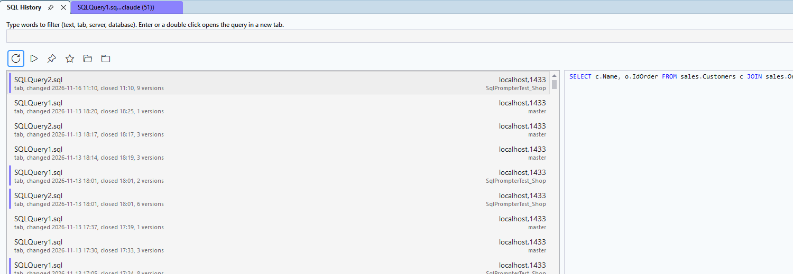
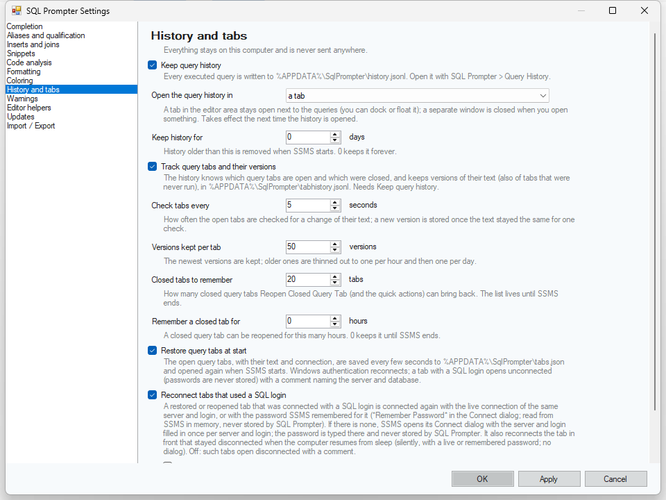

History and tabs
Every executed query, every query tab with its versions, tabs that come back after a restart and a list of closed tabs. Everything stays on this computer.
Query history

The history holds two kinds of entries: runs (every executed query: the text, server, database, login and time) and tabs (a query tab with the versions of its text, see below). Each row has two lines: the tab name and the time on the left, the server and database on the right; a colored strip on the left shows the coloring environment of the connection.
- Filter: type words into the box (they are matched against the text, the tab name, the server and the database). Enter or a double click opens the entry in a new tab.
- Views (the icon buttons above the list): everything, executed queries, pinned runs, favourites, open tabs, closed tabs. The window always opens on everything; the filter combines with the view.
- Buttons and the right-click menu: Open In New Tab (Go To Tab for a tab that is still open), Pin / Unpin, Favourite / Unfavourite, Make A Snippet (the text goes into the snippet manager as a draft), Delete, and Versions in the menu of a tab.
- Names: a row shows the name the tab had (
SQLQuery2.sql, the name you gave it, or the file name of a saved script); an unsaved tab whose name the history does not know shows as (unnamed query). A tab opened from an entry gets the same name again (SQLQuery2 (2).sqlwhen a tab of that name is open already). - Connection: the text always lands in the new tab. If SSMS cannot connect it (the Connect dialog is cancelled, the VPN is down, the login is refused) the tab stays disconnected with the text, and the status bar says so; connect it later with Change Connection.
- Pinned runs are listed first and are never removed; favourites are kept by the cleanup like pinned runs but do not change the order.
The history opens in a tab of the editor area (it can be docked or floated) or, with Open the query history in: a separate window, in a window that closes when you open something. The files are %APPDATA%\SqlPrompter\history.jsonl and tabhistory.jsonl. Keep history for removes entries older than that number of days when SSMS starts (0 keeps them forever).

Tabs and their versions
With Track query tabs and their versions the history knows which query tabs are open and which were closed, and keeps versions of their text (also of tabs that were never run). Every few seconds (Check tabs every, default 5) the open tabs are checked; a version is stored once the text has stayed the same for one check, and also when a tab is saved or run, when it opens and when SSMS shuts down. Empty tabs are not stored. Beyond Versions kept per tab (default 50) the versions are thinned out: all of the last two hours, then one per hour, then one per day. A closed tab keeps the text of its last check. Versions in the right-click menu opens an older text of a tab.
Restore tabs at start
With Restore query tabs at start the open query tabs, with their text, name and connection, are saved every few seconds to %APPDATA%\SqlPrompter\tabs.json and opened again when SSMS starts. A password is never stored:
- Windows authentication reconnects by itself.
- A tab that used a SQL login opens unconnected with a comment naming the server and database, unless Reconnect tabs that used a SQL login is on. Then it is connected again with the live connection of the same server and login, or with the password SSMS itself remembered (Remember Password in the Connect dialog; read from SSMS in memory, never stored by SQL Prompter). If there is none, SSMS opens its Connect dialog with the server and login filled in, once per server and login.
- Offer Remember Password in that Connect dialog (off by default) ticks Remember Password there so SSMS keeps what you type in its own store.
- The same reconnection also happens for the tab in front when the computer resumes from sleep and the tab stayed disconnected.
Reopen a closed tab
SQL Prompter > Reopen Closed Query Tab (Ctrl+Shift+Alt+T by default: Ctrl+Shift+T is Go To File and Ctrl+Alt+T is Template Explorer in SSMS, so the first free of the three is set) brings back the last closed tab with its text, name and, as in the restore, its connection. The quick actions popup lists the last eight closed tabs (name or first line, server and database) to pick one. Closed tabs to remember (default 20) and Remember a closed tab for (hours, default 24; 0 keeps it until SSMS ends) limit the list; it lives until SSMS ends.
Rename a query tab
SQL Prompter > Rename Query Tab... (or a double click on the tab) asks for a name that replaces SQLQuery3.sql in the caption; SSMS still appends the server, database and login. The name survives a restart of SSMS and a reopen of the tab.